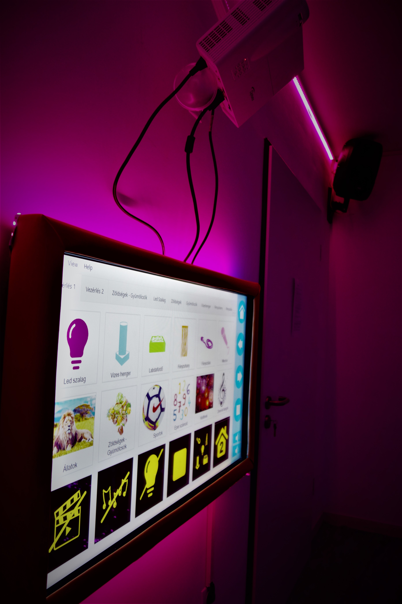
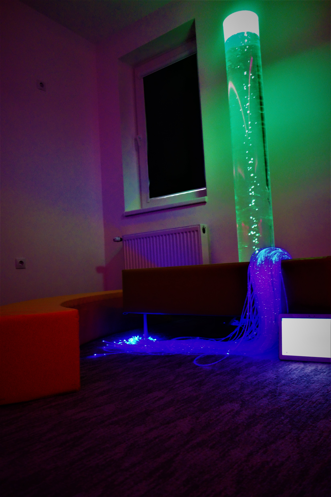
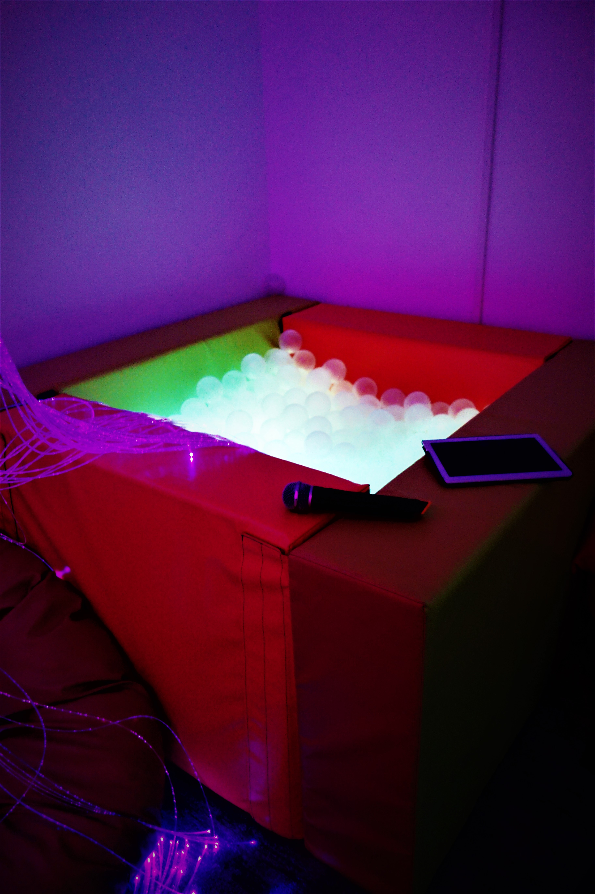
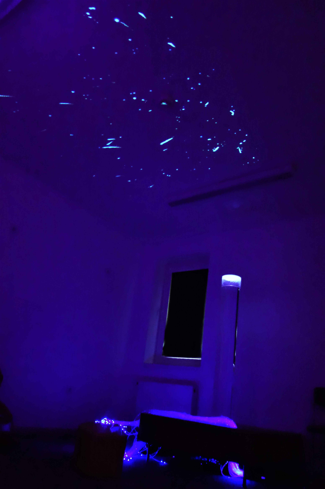

| Eszköztámogatás | Galléria | Menü | Teremrend | Órarend | Kérdőív |
Intézményünk terápiás szolgáltatása 2019 óra a Snoezelen szoba, mely lehetőséget biztosít a gyermekeknek a hang és fényterápia élményének átélésére. A szoba egy szőnyeggel borított, hangszigetelt, fény és hangeszközökkel ellátott terem melyben a gyermekek érzékelési és észlelési készségeit tudjuk fejleszteni, nemmellesleg rendkívül nyugtató hatású.
Lehetőség van kiscsoportos illetve egyéni terápiákra is. Ilyenkor a fejlesztőterapeuta egy vagy több gyerekkel és asszisztenciával bekapcsolja a gyermekeknek szánt megfelelő multimédiás tartalmat és terem eszközeinek színét, fényerejét és hanghatásait a gyermekek igényeihez igazítja.
- A teremben található:
- buborékhenger
- fényzuhany
- fényfüggöny
- fény-labda fürdő
- masszásfotel
Továbbá egy a rendszerrel összekötött mikrofon is. Ennek különálló bemutatása kiemelten fontos mert akár a megkésett beszédfejlődés beindítására is alkalmas, hiszen ahogy és amilyen hangerővel a gyermek beszél, úgy változik a terem és bizonyos eszközök színe is. Maga a mikrofon vezeték nélkül működik, észelelési hatótávolsága pedig igen nagy. A fejlesztésben résztvevő gyermek akár mászkálhat is a teremben, kipróbálva más eszközöket is. Ezalatt a tanulók gyakorlatilag észrevétlenül és játszva tanulhatják meg a :
- színeket melyeket csoportosíthatnak (hideg, illetve meleg színek szerint)
- halk és hangoshangok közti különbséget
- hangszínük változtatását
Ezen kívül az érzékelést is fejleszthetjük, hiszen akár több különálló eszköz is reagálhat a hangokra.
A termet egy a szobához tartozó tabletről, de akár saját okoseszközről is irányíthatjuk, mint androidos mint ios-es készülékünkön: link Ha a gyermekek szeretnének interakcióba kerülni a teremmel egy falra felszerelt ütés és vízálló, nagyméretű érintőképernyős felület áll rendelkezésükre, melyen (bár korlátozottan) de maguk is állíthatnak színeket illetve hangokat. Jó szórakozást és tanulást!   
Reméljük az információink hasznosak voltak az ön számára!
Üvözlettel: Az intézmény vezetősége!
Telefonszám: +3630 123-45678
E: mail: kerek.vilag.dok@gmail.com